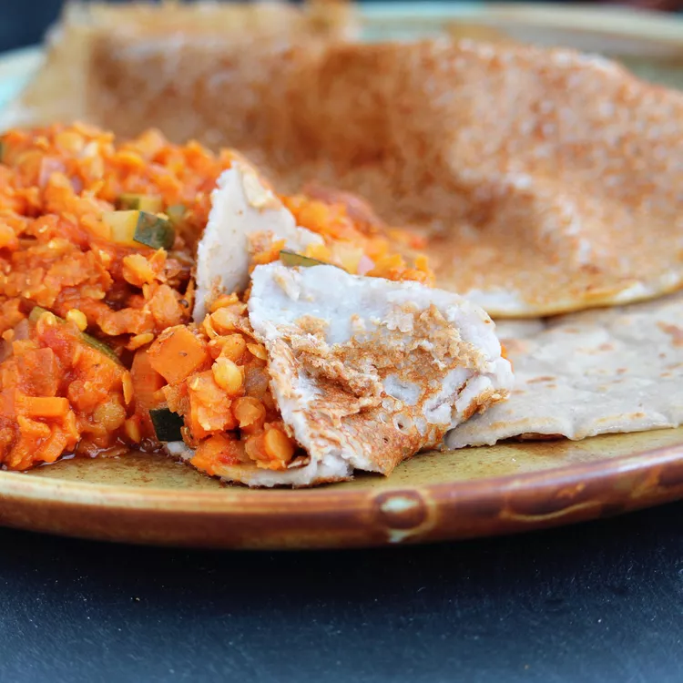

Injera (Ethiopian Teff Bread)

Ethiopian food isn't just delicious, it's also fun to eat. The key is injera, the thin fermented flatbread that's both plate and silverware. Pile a variety of stews and cooked vegetables on top, then tear additional pieces of injera to scoop up bite-size portions of the food.
Ingredients
- 2 cups of teff flour (you can also use a combination of teff and other flours like wheat or barley)
- 2 cups of water (plus more for soaking)
- 1/2 teaspoon of active dry yeast (optional, but it helps with fermentation)
- 1/2 teaspoon of salt (adjust to taste)
Steps to Prepare it
- In a large bowl, combine 2 cups of teff flour with 2 cups of water.
- Mix well until you have a smooth batter.
- Cover the bowl with a clean kitchen towel and let the batter sit at room temperature for about 24 to 48 hours to ferment.
- After the fermentation period, stir the batter gently to incorporate any settled solids at the bottom of the bowl.
- Heat a non-stick skillet or a large flat pan over medium heat.
- Pour a ladleful of the batter onto the skillet, starting from the center and working your way in a circular motion to create a thin, round injera.
- Cover the skillet with a lid and let the injera cook for about 2-3 minutes until small bubbles form on the surface and the edges lift slightly.
- Remove the cooked injera from the skillet and transfer it to a plate or clean kitchen towel to cool.
- Repeat the process with the remaining batter to make more injera pancakes.
- Allow the injera to cool completely before serving.